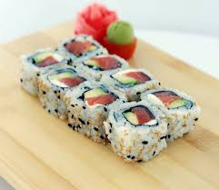
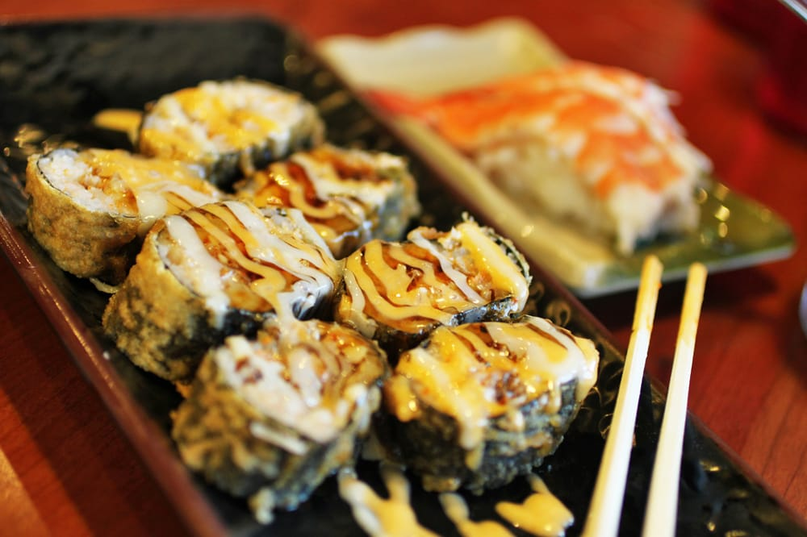
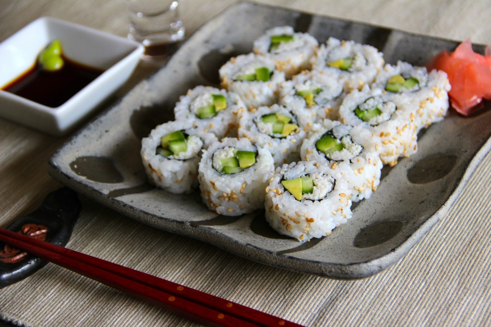

Popular Sushi in North America
Philadelphia Sushi Roll
One of my favourite rolls, the Philadelphia Sushi Roll is a very well-know American and Japanese fusion rolls. The roll consists of raw or smoked salmon, a fresh avocado wedge, and some signature Philadelphia cream cheese. Some restaurants like to add asparagus in it as well, but I haven't personally come across a sushi bar that does yet. This roll is known for it's soft texture and cheesy taste!
Dynamite Sushi Roll
Another roll that is very popular in North America is the Dynamite Sushi Roll. This roll varies from sushi bar to sushi bar but every sushi bar has the roll on it's menu! Traditionally, this roll consists of yellowtail, shrimp tempura, bean sprouts, carots, avocado, cucumber, chili, and spicy mayo. The variation of tastes and flavours is what makes this roll so popular!
California Sushi Roll
This is roll that either gets you into loving sushi or introduces you to the concept of sushi. If you go to a restaurant that doesn't specialize in sushi but still serves it, you can bet this roll will be on that menu. It is known as the father of all sushi rolls and formerly known as the Tojo sushi roll. This roll consists of imitation crab, avocado, cucumber, nori, and sometimes topped with sesame seeds. This roll doesn't contain any raw meat and tends to be incredibly cheap compared to other rolls.
Spicy Tuna Sushi Roll
Many rolls start with the word "Spicy" as its lavishly dressed with a Japanese spicy mayo sauce. Spicy tuna, as well as Spicy Salmon are very popular sushi rolls since they are a crowd favourite thanks to the spicy mayo. This roll was also created in North America. It's a simple roll that consists of tuna, spicy mayo, chill sauce, and nori, but does different revisions to it that include avocado, cucumber, or no chill sauce, nori, or spicy oil. It's a roll that tastes great that's easy to make at home.